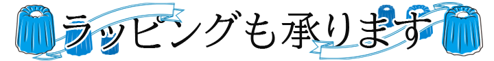
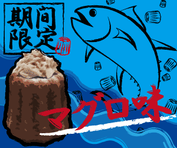
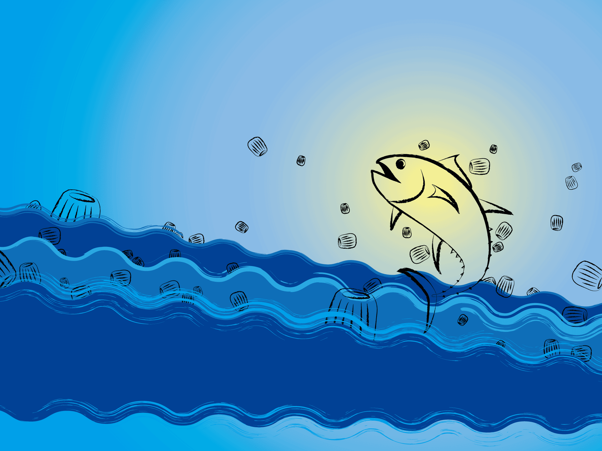
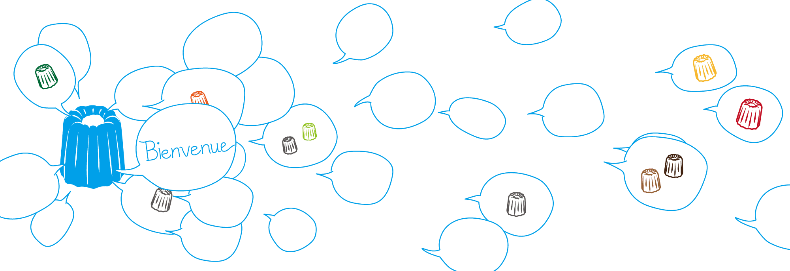
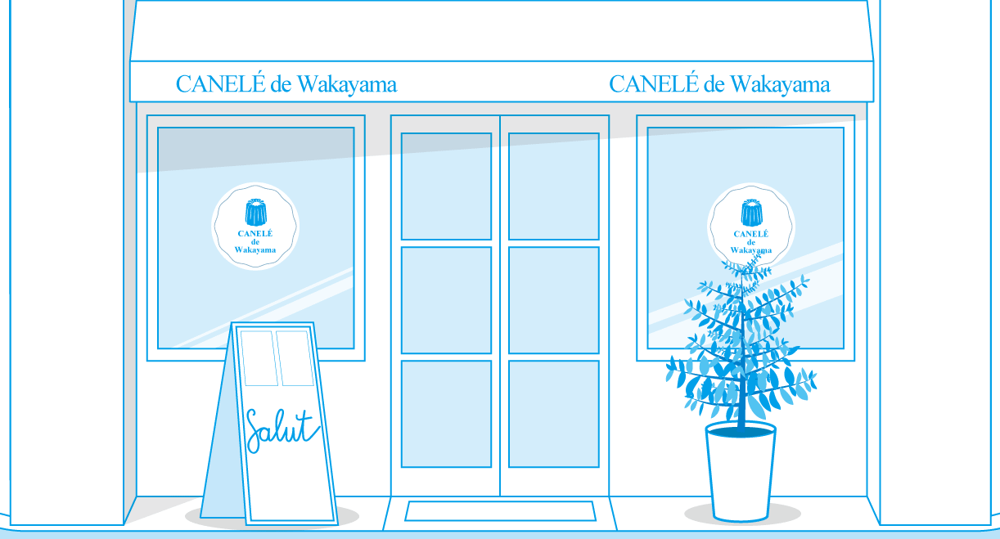
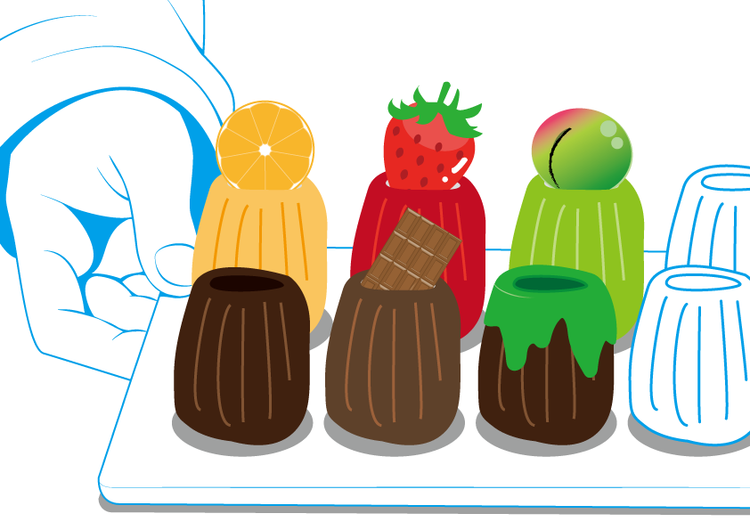
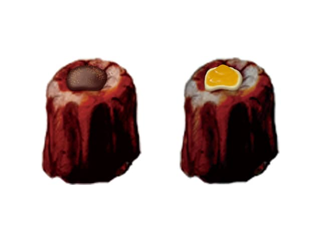

URL
https://caneleeeee.jimdofree.com/
職業訓練中、グループワークでジンドゥーを使用し、制作したWebサイトです。 私は主にバナーを担当しました。
フランス発祥のスイーツ「カヌレ」と和歌山県産の食材をかけ合わせるというコンセプトのもとで制作しました。 全体的に青を基調にしています。
このサイトでの制作物

プレゼント、ギフト用にラッピングを希望する方を対象に、ラッピング購入ページへ誘導するためのバナーです。

サイトのインパクトを与えるため、何か一つ奇抜なものを作ろうということで、 マグロ味のカヌレを考案しました。 発売予定の特設ページに飛びます。 バナーには、木炭ブラシを使い、和風の雰囲気を表現しています。

発売予定特設ページのバナーです。

Contactページのバナーです。 カヌレが喋っているのをイメージし、カヌレから吹き出しが出ているイラストを制作しました。

CANELÉ de Wakayamaのお店の外観をイメージしたものです。 実際にある複数のスイーツの店の外観を観察しながらIllustratorで描きました。

（カヌレの線、いちご、梅のデザインは別の人が担当しました。） トップページのイラストです。手のイラストは写真をなぞって描きました。

（カヌレのイラストは別の人のデザインです。）上に乗っているチョコとみかんジャムのイラストをPhotoshopで描きました。